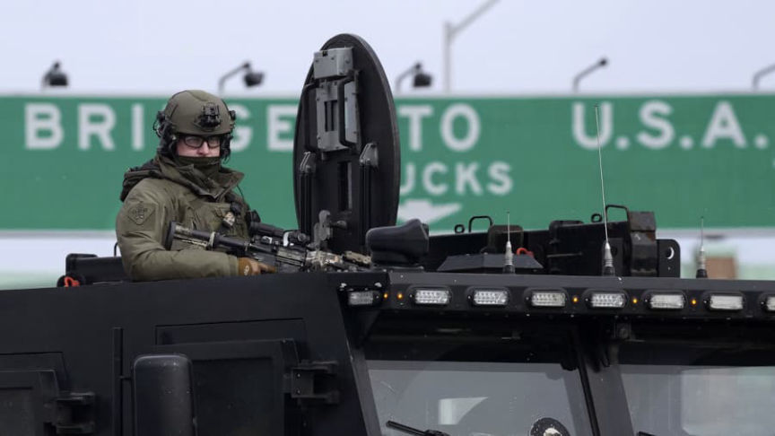
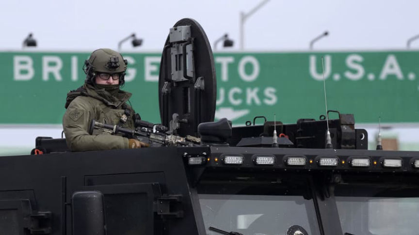

Canadian Government Wants to Crack Down on Crypto
~3 min read | Published on 2022-02-16, tagged General-News using 587 words.
In an attempt to stop protesters from honking, Canadian officials are broadening the anti-money laundering and terrorist financing rules to include cryptocurrency and other digital assets.
The Emergencies Act, which the Canadian government invoked to crack down on unauthorized honking, ushered in various regulations intended to prevent honkers from using a bank account or receiving funding from outside sources, including cryptocurrency.
Deputy Prime Minister and Minister of Finance, Chrystia Freeland:
“[W]e are broadening the scope of Canada’s anti-money laundering and terrorist financing rules so that they cover crowdfunding platforms and the payment service providers they use. These changes cover all forms of transactions, including digital assets such as cryptocurrencies.
[img=]This is terrorism.[/img]
The illegal blockades have highlighted the fact that crowdfunding platforms, and some of the payment service providers they use, are not fully captured under the Proceeds of Crime (Money Laundering) and Terrorist Financing Act.”
It is not entirely clear how the Canadian government could regulate cryptocurrency. They could control the on-ramps and off-ramps. But they already do that.

“Our banks and financial institutions are already obligated to report to the Financial Transactions and Reports Analysis Centre of Canada, or FINTRAC. As of today, all crowdfunding platforms, and the payment service providers they use, must register with FINTRAC and must report large and suspicious transactions to FINTRAC.
This will help mitigate the risk that these platforms receive illicit funds; increase the quality and quantity of intelligence received by FINTRAC, and make more information available to support investigations by law enforcement into these illegal blockades.”
The announcement also revealed that the Canadian government authorized financial services in Canada to freeze the accounts of suspected honkers. The order included banks or other financial service providers and permitted them to immediately freeze accounts suspected of being “affiliated with these illegal blockades.” This action will not require a court order.
“[T]he government is issuing an order with immediate effect, under the [i]Emergencies Act[/em], authorizing Canadian financial institutions to temporarily cease providing financial services where the institution suspects that an account is being used to further the illegal blockades and occupations.”
Reading between the lines, it appears as if the federal government will be directing banks to freeze accounts. Financial services should identify and freeze accounts independently, but the announcement referenced the government’s role in the financial crackdown.
“Federal government institutions will have a new broad authority to share relevant information with banks and other financial service providers to ensure that we can all work together to put a stop to the funding of these illegal blockades.”
Freeland said she “spoke directly with the heads of Canadian banks” before the announcement. It seems clear that any regulation of cryptocurrency will be regulation of the on-ramps, off-ramps, and the bank accounts of cryptocurrency users who used such a ramp.
As an aside, Freeland also authored the book [i]Plutocrats[/em]. The book describes the ongoing concentration of wealth into the pockets of oligarchs and plutocrats. The book has been described as a thinly-veiled apologia for said transfer of wealth. Fitting, if true. I have only just started reading the book. It is far from the top of my reading list, though, so I will have to wait to form my own opinion.
archive.org, archive.is, .onion
As another aside and since I have not really been following the terrorism™ in Canada, what is the deal with the bridge blockades? Are they media ops? Wouldn’t holding the roads to and from the bridges in question be just as ridiculous?
The Emergencies Act, which the Canadian government invoked to crack down on unauthorized honking, ushered in various regulations intended to prevent honkers from using a bank account or receiving funding from outside sources, including cryptocurrency.
Prime Minister Justin Trudeau and Deputy Prime Minister & Minister of Finance Chrystia Freeland.
Deputy Prime Minister and Minister of Finance, Chrystia Freeland:
“[W]e are broadening the scope of Canada’s anti-money laundering and terrorist financing rules so that they cover crowdfunding platforms and the payment service providers they use. These changes cover all forms of transactions, including digital assets such as cryptocurrencies.
[img=]This is terrorism.[/img]
The illegal blockades have highlighted the fact that crowdfunding platforms, and some of the payment service providers they use, are not fully captured under the Proceeds of Crime (Money Laundering) and Terrorist Financing Act.”
It is not entirely clear how the Canadian government could regulate cryptocurrency. They could control the on-ramps and off-ramps. But they already do that.

Trudeau will not involve the military. | Ontario Provincial Police
“Our banks and financial institutions are already obligated to report to the Financial Transactions and Reports Analysis Centre of Canada, or FINTRAC. As of today, all crowdfunding platforms, and the payment service providers they use, must register with FINTRAC and must report large and suspicious transactions to FINTRAC.
This will help mitigate the risk that these platforms receive illicit funds; increase the quality and quantity of intelligence received by FINTRAC, and make more information available to support investigations by law enforcement into these illegal blockades.”
The announcement also revealed that the Canadian government authorized financial services in Canada to freeze the accounts of suspected honkers. The order included banks or other financial service providers and permitted them to immediately freeze accounts suspected of being “affiliated with these illegal blockades.” This action will not require a court order.
“[T]he government is issuing an order with immediate effect, under the [i]Emergencies Act[/em], authorizing Canadian financial institutions to temporarily cease providing financial services where the institution suspects that an account is being used to further the illegal blockades and occupations.”
Reading between the lines, it appears as if the federal government will be directing banks to freeze accounts. Financial services should identify and freeze accounts independently, but the announcement referenced the government’s role in the financial crackdown.
“Federal government institutions will have a new broad authority to share relevant information with banks and other financial service providers to ensure that we can all work together to put a stop to the funding of these illegal blockades.”
Chrystia Freeland
Freeland said she “spoke directly with the heads of Canadian banks” before the announcement. It seems clear that any regulation of cryptocurrency will be regulation of the on-ramps, off-ramps, and the bank accounts of cryptocurrency users who used such a ramp.
As an aside, Freeland also authored the book [i]Plutocrats[/em]. The book describes the ongoing concentration of wealth into the pockets of oligarchs and plutocrats. The book has been described as a thinly-veiled apologia for said transfer of wealth. Fitting, if true. I have only just started reading the book. It is far from the top of my reading list, though, so I will have to wait to form my own opinion.
archive.org, archive.is, .onion
As another aside and since I have not really been following the terrorism™ in Canada, what is the deal with the bridge blockades? Are they media ops? Wouldn’t holding the roads to and from the bridges in question be just as ridiculous?